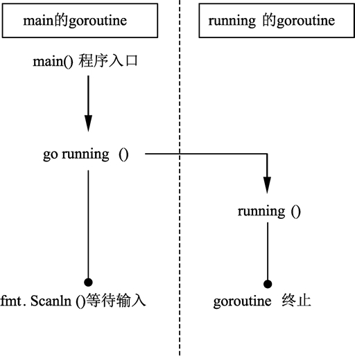

Go语言goroutine（轻量级线程）
在编写 Socket 网络程序时，需要提前准备一个线程池为每一个 Socket 的收发包分配一个线程。开发人员需要在线程数量和 CPU 数量间建立一个对应关系，以保证每个任务能及时地被分配到 CPU 上进行处理，同时避免多个任务频繁地在线程间切换执行而损失效率。
虽然，线程池为逻辑编写者提供了线程分配的抽象机制。但是，如果面对随时随地可能发生的并发和线程处理需求，线程池就不是非常直观和方便了。能否有一种机制：使用者分配足够多的任务，系统能自动帮助使用者把任务分配到 CPU 上，让这些任务尽量并发运作。这种机制在 Go语言中被称为 goroutine。
goroutine 是 Go语言中的轻量级线程实现，由 Go 运行时（runtime）管理。Go 程序会智能地将 goroutine 中的任务合理地分配给每个 CPU。
Go 程序从 main 包的 main() 函数开始，在程序启动时，Go 程序就会为 main() 函数创建一个默认的 goroutine。
使用 go 关键字创建 goroutine 时，被调用函数的返回值会被忽略。
如果需要在 goroutine 中返回数据，请使用后面介绍的通道（channel）特性，通过通道把数据从 goroutine 中作为返回值传出。
代码说明如下：
第 12 行，使用 for 形成一个无限循环。
第 13 行，times 变量在循环中不断自增。
第 14 行，输出 times 变量的值。
第 17 行，使用 time.Sleep 暂停 1 秒后继续循环。
第 25 行，使用 go 关键字让 running() 函数并发运行。
第 29 行，接受用户输入，直到按 Enter 键时将输入的内容写入 input 变量中并返回，整个程序终止。
这段代码的执行顺序如下图所示。
这个例子中，Go 程序在启动时，运行时（runtime）会默认为 main() 函数创建一个 goroutine。在 main() 函数的 goroutine 中执行到 go running 语句时，归属于 running() 函数的 goroutine 被创建，running() 函数开始在自己的 goroutine 中执行。此时，main() 继续执行，两个 goroutine 通过 Go 程序的调度机制同时运作。
goroutine 虽然类似于线程概念，但是从调度性能上没有线程细致，而细致程度取决于 Go 程序的 goroutine 调度器的实现和运行环境。
终止 goroutine 的最好方法就是自然返回 goroutine 对应的函数。虽然可以用 golang.org/x/net/context 包进行 goroutine 生命期深度控制，但这种方法仍然处于内部试验阶段，并不是官方推荐的特性。
截止 Go 1.9 版本，暂时没有标准接口获取 goroutine 的 ID。
虽然，线程池为逻辑编写者提供了线程分配的抽象机制。但是，如果面对随时随地可能发生的并发和线程处理需求，线程池就不是非常直观和方便了。能否有一种机制：使用者分配足够多的任务，系统能自动帮助使用者把任务分配到 CPU 上，让这些任务尽量并发运作。这种机制在 Go语言中被称为 goroutine。
goroutine 是 Go语言中的轻量级线程实现，由 Go 运行时（runtime）管理。Go 程序会智能地将 goroutine 中的任务合理地分配给每个 CPU。
Go 程序从 main 包的 main() 函数开始，在程序启动时，Go 程序就会为 main() 函数创建一个默认的 goroutine。
使用普通函数创建 goroutine
Go 程序中使用 go 关键字为一个函数创建一个 goroutine。一个函数可以被创建多个 goroutine，一个 goroutine 必定对应一个函数。1) 格式
为一个普通函数创建 goroutine 的写法如下：go 函数名( 参数列表 )
- 函数名：要调用的函数名。
- 参数列表：调用函数需要传入的参数。
使用 go 关键字创建 goroutine 时，被调用函数的返回值会被忽略。
如果需要在 goroutine 中返回数据，请使用后面介绍的通道（channel）特性，通过通道把数据从 goroutine 中作为返回值传出。
2) 例子
使用 go 关键字，将 running() 函数并发执行，每隔一秒打印一次计数器，而 main 的 goroutine 则等待用户输入，两个行为可以同时进行。请参考下面代码：
package main
import (
"fmt"
"time"
)
func running() {
var times int
// 构建一个无限循环
for {
times++
fmt.Println("tick", times)
// 延时1秒
time.Sleep(time.Second)
}
}
func main() {
// 并发执行程序
go running()
// 接受命令行输入, 不做任何事情
var input string
fmt.Scanln(&input)
}
命令行输出如下：
tick 1
tick 2
tick 3
tick 4
tick 5
代码说明如下：
第 12 行，使用 for 形成一个无限循环。
第 13 行，times 变量在循环中不断自增。
第 14 行，输出 times 变量的值。
第 17 行，使用 time.Sleep 暂停 1 秒后继续循环。
第 25 行，使用 go 关键字让 running() 函数并发运行。
第 29 行，接受用户输入，直到按 Enter 键时将输入的内容写入 input 变量中并返回，整个程序终止。
这段代码的执行顺序如下图所示。

图：并发运行图
图：并发运行图
这个例子中，Go 程序在启动时，运行时（runtime）会默认为 main() 函数创建一个 goroutine。在 main() 函数的 goroutine 中执行到 go running 语句时，归属于 running() 函数的 goroutine 被创建，running() 函数开始在自己的 goroutine 中执行。此时，main() 继续执行，两个 goroutine 通过 Go 程序的调度机制同时运作。
使用匿名函数创建goroutine
go 关键字后也可以为匿名函数或闭包启动 goroutine。1) 使用匿名函数创建goroutine的格式
使用匿名函数或闭包创建 goroutine 时，除了将函数定义部分写在 go 的后面之外，还需要加上匿名函数的调用参数，格式如下：
go func( 参数列表 ){
函数体
}( 调用参数列表 )
- 参数列表：函数体内的参数变量列表。
- 函数体：匿名函数的代码。
- 调用参数列表：启动 goroutine 时，需要向匿名函数传递的调用参数。
2) 使用匿名函数创建goroutine的例子
在 main() 函数中创建一个匿名函数并为匿名函数启动 goroutine。匿名函数没有参数。代码将并行执行定时打印计数的效果。参见下面的代码：
package main
import (
"fmt"
"time"
)
func main() {
go func() {
var times int
for {
times++
fmt.Println("tick", times)
time.Sleep(time.Second)
}
}()
var input string
fmt.Scanln(&input)
}
代码说明如下：
- 第 10 行，go 后面接匿名函数启动 goroutine。
- 第 12～19 行的逻辑与前面程序的 running() 函数一致。
- 第 21 行的括号的功能是调用匿名函数的参数列表。由于第 10 行的匿名函数没有参数，因此第 21 行的参数列表也是空的。
提示
所有 goroutine 在 main() 函数结束时会一同结束。goroutine 虽然类似于线程概念，但是从调度性能上没有线程细致，而细致程度取决于 Go 程序的 goroutine 调度器的实现和运行环境。
终止 goroutine 的最好方法就是自然返回 goroutine 对应的函数。虽然可以用 golang.org/x/net/context 包进行 goroutine 生命期深度控制，但这种方法仍然处于内部试验阶段，并不是官方推荐的特性。
截止 Go 1.9 版本，暂时没有标准接口获取 goroutine 的 ID。
关注公众号「站长严长生」，在手机上阅读所有教程，随时随地都能学习。内含一款搜索神器，免费下载全网书籍和视频。

微信扫码关注公众号